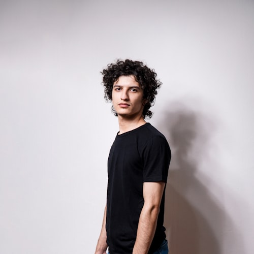

Decano
Mg. Carlos Huamán Quispe
Gestión 2024 – actualidad
Gestión actual de la Facultad de Administración: autoridades, Consejo de Facultad y comités.
Gestión 2024 – actualidad


Gestión 2025 – 2027
Órgano de gobierno de la facultad, integrado por docentes de las tres categorías y representantes estudiantiles, según la Ley Universitaria.
Mg. Carlos Huamán Quispe
Presidente
Dra. Rosa Illanes Cárdenas
Miembro
Mg. Miriam Condori Paucar
Secretaria

Mg. Katherine Vargas Loayza
Miembro
Diego Farfán Rojas
Representante estudiantil
Xiomara Ccorimanya Huillca
Representante estudiantil
Haz clic en un comité para ver su función, resolución de conformación y miembros.
Comité de Currícula
Revisa y actualiza el plan de estudios y la malla curricular.
Periodo: 2024 – actualidad
Ver resolución de conformación ↗
Dra. Rosa Illanes Cárdenas
Presidenta
Mg. Jorge Ttito Mamani
Miembro

Lic. Percy Aguilar Sotelo
Miembro
Comité de Calidad y Acreditación
Conduce el proceso de autoevaluación con fines de acreditación de la carrera.
Periodo: 2025 – actualidad
Resolución de conformación: pendiente de publicar.
Mg. Carlos Huamán Quispe
Presidente
Mg. Katherine Vargas Loayza
Miembro
Mg. Miriam Condori Paucar
Miembro
Comisión de Fiscalización y Procesos Administrativos
Atiende denuncias y procesos disciplinarios internos según el reglamento vigente.
Periodo: 2023 – 2026
Ver resolución de conformación ↗
Mg. Jorge Ttito Mamani
Presidente
Lic. Percy Aguilar Sotelo
Secretario
Diego Farfán Rojas
Representante estudiantil